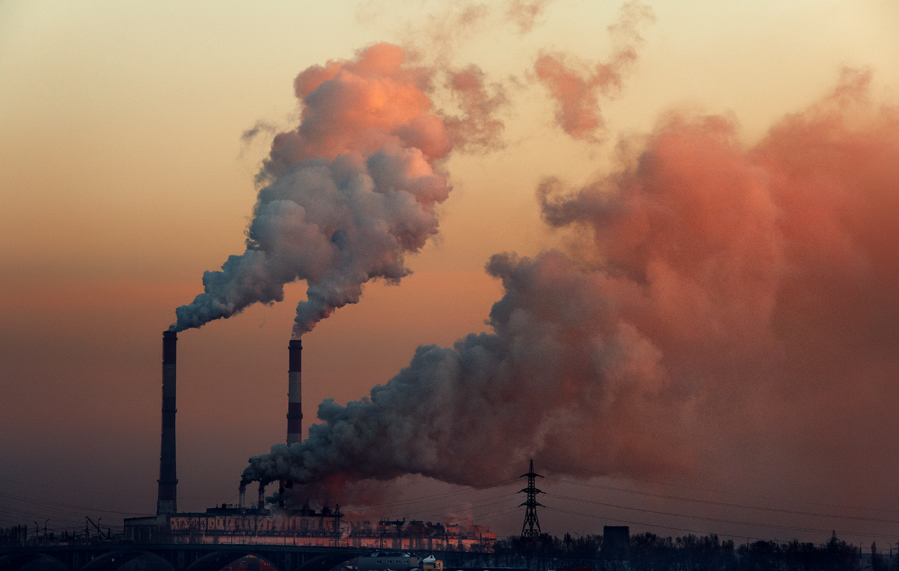
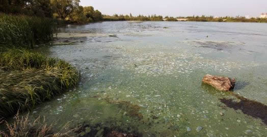
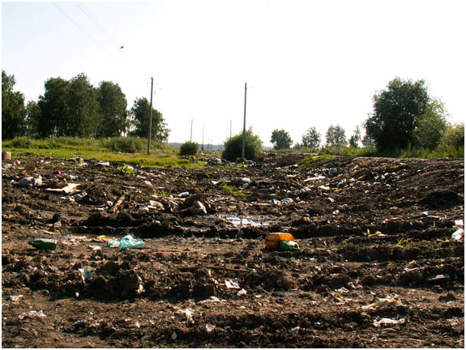

Экологические проблемы
Воронежская область обладает развитой промышленностью и сельским хозяйством. Это способствует появление таких экологических проблем как:
1. Загрязнение атмосферы
Ежегодно в области выбрасывается в атмосферу около 400 тыс. т загрязняющих веществ. Очистными сооружениями улавливается около 14% из них. Воздух загрязнён углекислым газом, соединениями серы, азота, органическими соединениями, пылью.
Автомобили выбрасывают около 75% всех загрязняющих воздух веществ. Из предприятий наибольший вклад вносят литейные и химические производства, котельные. Добыча полезных ископаемых, строительные и дорожные работы загрязняют атмосферу пылью. Часть загрязняющих веществ через атмосферу поступает в область из соседних регионов.
Больше всего загрязнён воздух в Воронеже и других крупных городах, а также вдоль крупных автодорог. В Воронеже может наблюдаться смог.
2. Экологические проблемы вод
Реки области за последние десятилетия сильно обмелели. Уменьшалась длина многих рек, некоторые летом пересыхают. Это связывают с вырубкой лесов и распашкой земель в области.
Речная вода сильно загрязнена выбросами предприятий, канализационными стоками, грязной водой, стекающей после дождей по улицам городов. В воду попадают нефтепродукты, синтетические моющие средства и другие химикаты, соединения металлов, удобрения, яды. Наибольшее загрязнение наблюдается в Воронежском водохранилище.
В области очищается менее 3% сточных вод. Остальные сбрасываются в водоёмы без очистки. Сточные воды и смытые с полей минеральные удобрения вызывают «цветение водоёмов.
3. Экологическое состояние почв
Интенсивное сельское хозяйство привело к ухудшению состояния почв области. В них уменьшаемся содержание гумуса и минеральных веществ. Около 25% почв области подвержено водной эрозии, а около 3,5% ветровой. Около 60 тыс. гектаров территории области занято оврагами. Значительная часть почв подкислена, есть засолённые земли.
Почвы загрязнены тяжёлыми металлами (свинцом, кадмием, никелем, медью), местами загрязнены радиоактивными веществами, попавшими сюда после аварии на Чернобыльской АЭС.